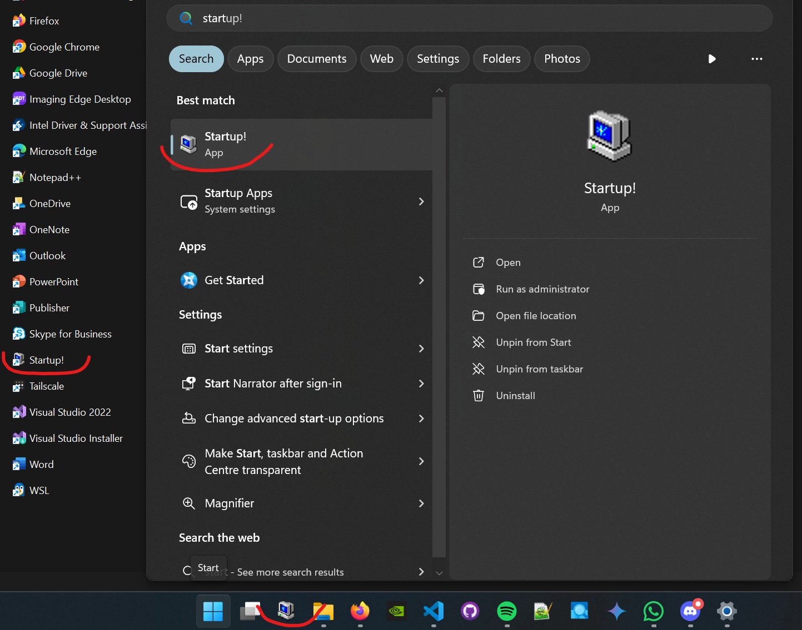

def run_startup_script():
"""
Runs the startup script.
"""
print(f"Welcome!")
start_programs(
[
"powershell",
"notepad++",
("firefox", 8),
]
)
start_work_files([".temp"])
run_commands([('login-to-cloud --user bwrob', 30)])Why a start up script?
Confesion time. Pre-COVID I worked for a Swiss bank — it was the whole corporate package. Working from a crowded office, open space, dedicated desks, dedicated desktop PCs, hundreds of people. And we never turned the PC’s off, some of them were running constantly for months. Not very eco-friendly behaviour, either from the company side and from the employees. But there were legit reasons for this and the company had much bigger sins on their books.
As for the reasons for eternaly turned on machines — the propriaetary frameworks and tooling we used was awfully heavy and slow. If you were occasionally forced to kill all the processes once in a while due to an update or system crash getting them all up again would take an hour or more. Developer tools, pricing systems, connections to Monte Carlo farms, downloading trade data, analysis definitions.
One tidbit to get this point across - in 2019 we still used 32-bit Win7, which had a cap on single-process memory consumption to 4Gb. We had a universally used hack to extend this to 8Gb for Excel, since the default wasn’t enough for many of our pricing sheets.
When post-COVID I parted ways with the company, I got a work notebook from the new employer. The office was much sparser, quiter with ‘hot seats’ approach. I worked mostly remotely either way. This ment switching off the company machine each day, as the VPN connections woudnt last overnight either way. I was very annoyed with openning all of the usual setup day after day, after getting used to having it all waiting for me to jump right in.
Hence the startup script to open all of the apps, tools and files programatically. It won’t cover everything, like authorizations or connections but stil a little helper to start the day.
The setup
Let’s think about the design first – this is a good practice by the way. Imagine the code being split into two
- the hiddden logic layer, the worker that does stuff,
- and the public interface that integrates with the rest of the, the manager.
We can write the public interface first to see what we want to achive and later deal with filling in a working implementation. You can either define the logic functions as mocks, or just live with linting issues. This is what my desired usage is:
We want to specify programs to start, open all files in some temp folder, and run a list of shell commands. After each step there should be some delay not to spam system with process calls. Certain steps might be more time consuming, like cloud services authorization. Those need longer delay. On the other hand, specifying delay for each step is cumbersome, most cases would be fine with some default value.
The last bit of convinienvce
We got it guys, the script works and the job is done. But.. do you recall the last time you googled a shortcut for a semi-frequently used functionality? Do you still remember the shortcut, or use it each time you need the functionality? Convinience needs to be convinient (obviously). So let’ make usage of our script as seemless as possible.
At Windows OS, for me best way would be to have a shortcut that would run it on one click that is pinned to taskbar and start menu. To create one:
- Go to any folder, right-click and select
New > Shortcut. - In the guide that pops up paste in
%systemroot%\System32\cmd.exe /c "python.exe $1"where$1should be replaced by the path to your script. You can also replacepython.exewith interpreter path of any venv you wish. - Optionally, you can later change the icon for the shortcut (neweds to be
.icofile). I like to roll with Win-98 style `My Computer’ icon. - Copy the shortcut to start menu dir. For Win11 it’s
C:\ProgramData\Microsoft\Windows\Start Menu\Programs. You should be able to see it in start menu already. Now you can pin it to taskbar.

That’s a good enough reminder and convinience tool for me. You might need some different setup, especially for another OS. For Linux, you might try to levarage activate or bashrc scripts in your working setup. Here you can download the script and example Windows shortcut.
Further extensions
There are a couple more things I wish this guy could do for me still:
- Changing Teams status to green - there’s a MS Graph API that could do this but we would need to manage Azure authorizations through the script. I am not up to that, especially on a work account. Might experiment on personal one in the future.
- Display placement of opened processes – I have 2 displays (which you could count as 4, due to size format) and I am very particular about where each app should go. I would love the apps to open where they should. This is however OS specific, for Win it require to mingle with win32api. Yet another project for the future.